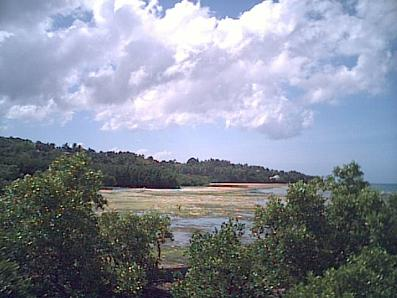
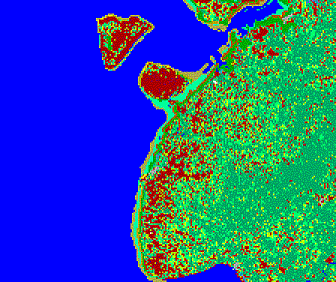
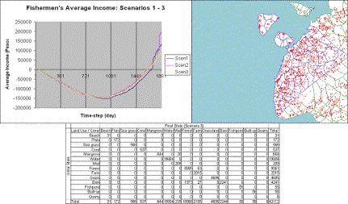

|
BoholNatural Resource Management of the Municipality of Loon in Bohol, Philippines.Paolo Campo (University of the Philippines, Diliman, Philippines)  The Bohol model is one of the results of a research exploring the use of MAS modeling that incorporates GIS and remote sensing techniques and artifacts, in developing support tools which could be used to facilitate learning and fostering a participatory approach in policy-making for natural resource management.To be able to build the simulation model a two-part fieldwork in the study area was conducted by a research team to familiarize themselves with the peoples perception of their current NRM situation and its problems. The fieldwork allowed the researchers to gather spatial information on the study area, and details about activities of the locals with regards to the use of their natural resources were gathered through workshops, interviews and group discussions. A satellite image (2000 Landsat Image) was also used to get the land use/cover information of the study area. All these information were processed and integrated in the MAS simulation model. The model included two main stakeholders, namely the inhabitants and the local government unit (LGU). 3 types of inhabitants were considered for the model: (1) slash-and-burn farmers; (2) subsistence fishermen; and (3) fishpond workers. The slash-and-burn farmers would turn forest areas to farm lands then abandon them after several cultivation cycles. The fishermen would fish only on shallow areas, but they may also perform fishing activities in mangrove areas, wherein no human activity is permitted as they were all declared as sanctuaries by the LGU. The slash-and-burn farmers and fishermen also go to the forest to gather firewood and quarry limestone to augment their insufficient income. The fishpond workers would put poison in their ponds after harvest, which eventually drain to the sea. Another activity of the fishpond workers is to replace the bottom of the pond after four harvests. To do this, they would have to quarry for limestone on mountainsides. The old bottom from the fishpond would then be used to repair the dumped on sides of roads. The LGU on the other hand is tasked reforest the mangrove areas and declare them as sanctuaries. Eight scenarios were set-up based on the combinations of the actions to be taken by the fishermen and the LGU. On each scenario, all the fishermen could either be following the law on sanctuaries (i.e. no human activity in the mangrove areas are performed), breaking the law, or each of them could be randomly breaking the law. Also, the fishermen would ask the LGU to give limited access to the sanctuaries. The LGU could perform the following tasks depending on the scenario: (1) dont perform any mangrove reforestation activity and ignore the requests of the fishermen; (2) perform mangrove reforestation, but ignore the requests of the fishermen; or (3) perform mangrove reforestation and give limited access to the sanctuaries. The results of the scenarios were analyzed using charts, change-detection maps and cross tabulations of land use/cover change.   The use of spatially-explicit models, such as GIS and RS models, as a learning tool offer the participants of an NRM situation a new way to see their natural resources and environment by means of digital maps. Its a way for them to see their environment from outside the box. Through its use, the MAS models may enhance the learning experience by means of a running simulation. The participants of an NRM situation may see the MAS model simulation as a movie about themselves and their possible future with them being the actors of this movie. Adding GIS and RS techniques to analyze the results of the simulation may add to this experience by offering ways to visualize the results of the actors actions such as change-detection maps and cross-tabulations. ReferencesCampo, Paolo, MULTI-AGENT SYSTEMS MODELING
INTEGRATING GEOGRAPHIC INFORMATION SYSTEMS AND REMOTE
SENSING: Tools for Participatory Natural Resource
Management (Prototype for Loon in Bohol, Philippines),
MSc Thesis, University of the Philippines, Diliman,
Philippines, April 2003 For more information, contact the author. |
|